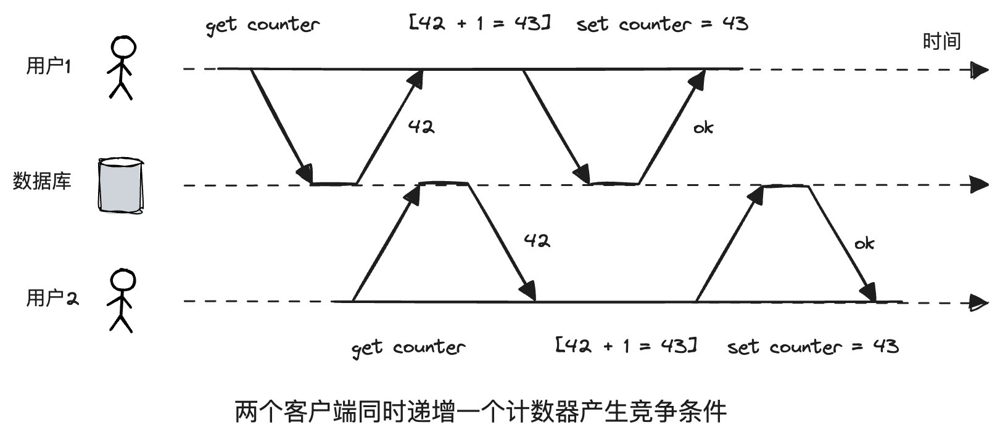
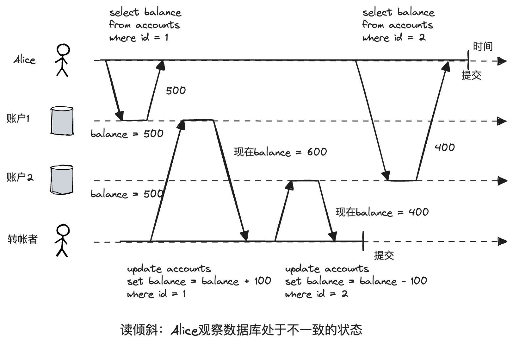
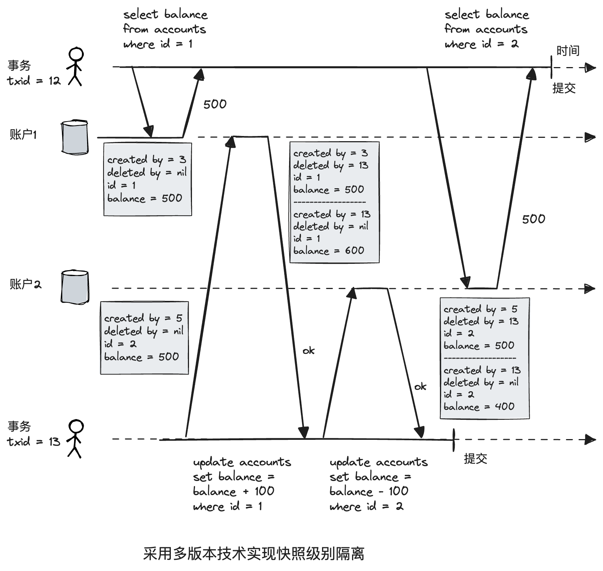
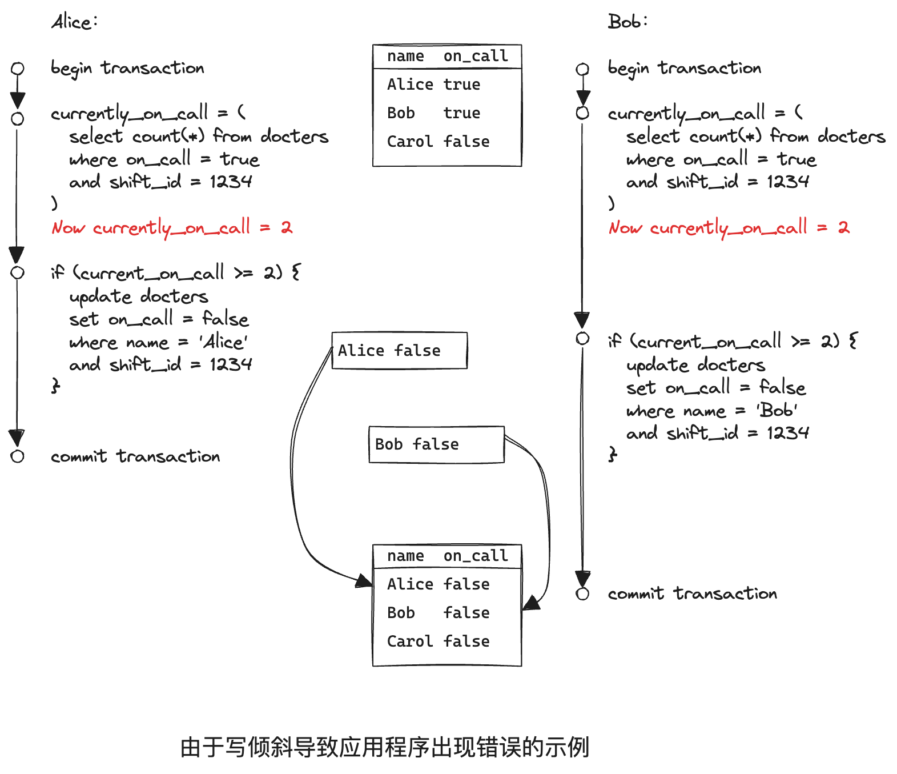
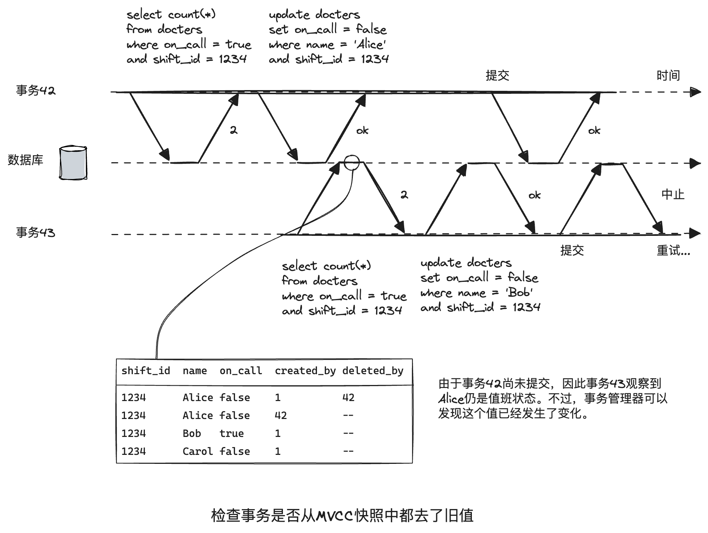
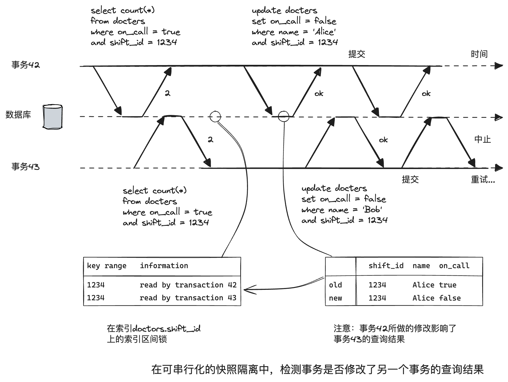

第7章 事务
深入理解事务
事务将多个读写操作捆绑成一个逻辑整体，要么都成功，要么都失败。
ACID
原子性（Atomicity）、一致性（Consistency）、隔离性（Isolation）、持久性（Durability）。
BASE
基本可用性(Basically Available)，软状态（Soft state）和最终一致性（Eventual consistency）。
各家数据库所实现的ACID并不尽相同，更像是一个市场营销用语。BASE是另一套标准，同样模棱两可，唯一可以确定的是“它不是ACID”。
原子性
要么成功，要么失败，不能部分成功部分失败。
在ACID的语境中，指的是出错时终止事务，并将部分完成的写入丢弃。
一致性
一致性是指对数据有特定的预期状态（满足特定的约束），比如银行贷款和借款余额保持相等。
一致性是应用层提供的属性，其他三个是数据库应提供的属性。
隔离性
并发执行的多个事务互相隔离，不能交叉。多个事务执行的效果和串行执行一样，但内部实现不要求一定串行执行。
下面的例子中，用户1和用户2分别更新同一个对象，最终结果本来应该为44，现在是43。由于没有隔离，导致用户1的更新丢失。

持久性
提供一个安全可靠的地方存储数据而不用担心数据丢失。在计算机语境下常常指写入磁盘。
单对象与多对象事务操作
单对象事务，比如向数据库写入20KB的JSON文档，多对象事务，比如外键的更新，二级索引的更新等。
弱隔离级别
所谓弱隔离级别在这里的意思是非串行化。
MySQL等数据库的四种隔离级别：读未提交，读提交，可重复读，串行化。
读-提交
读-提交是最基本的隔离级别，它指提供如下两个保证：
- 读数据时，只能看到已成功提交的数据（防止“脏读”）。
- 写数据时，只会覆盖已成功提交的数据（防止“脏写”）。
读-提交非常流行，它是Oracle 11g、PostgreSQL、SQL Server 2012、MemSQL以及许多其他数据库的默认配置。
脏写一般通过行级锁来实现，当事务想修改某个对象，它必须先获取该对象的锁。
脏读的话，理论上也可以这么做，但是这样做性能太差。因此，实际一般都是维护旧值和当前事务设置的新值两个版本。在事务提交前，读取旧版本，事务提交后，才读取新版本。
快照级别隔离与可重复读
读-提交有不可重复读（nonrepeatable read）或读倾斜（read skew）[1]的问题。
转帐者从账户1转帐100块到账户2，初始时两个账户都是500块钱，由于发生了脏读，Alice看到了转帐事务的中间状态，她看到账户1是500块，账户2是400块，少了100块。

这种问题，在一些场景是不可接受的：
- 备份场景：备份里可能含有新旧两个版本的数据，如果从这样的备份恢复，最终就会导致永久的不一致。
- 分析查询与完整性检查：这种查询可能会扫描大半个数据库，亦或定期的数据完整性检查。如果这些查询在不同的时间点观察数据库，可能会返回无意义的结果。
快照级别隔离是最常见的解决方法。它的想法是，每个事务都从数据库的一致性快照中读取，事务一开始锁看到的是最近提交的数据，即使数据随后被其他事务修改，但保证每个事务都只能看到特定时间点的旧数据。
基本上常见数据库都实现了这种隔离级别。
采用一种类似于读-提交中防止脏读但更通用的方案，保留对象的多个不同的提交版本，这种技术称为多版本并发控制（Multi-Version Concurrency Control，MVCC）。
既然是更通用的方案，因此在实现读-提交时，干脆也用MVCC，通过维护对象的两个版本就够了：一个已提交的旧版本和尚未提交的新版本。典型做法是，在读-提交级别下，对每一个不同的查询创建一个快照；在快照隔离级别下，则使用一个快照来运行整个事务。
前面不是说两个版本就够了，为啥后面又说一个查询一个快照呢？
我个人理解，在读-提交级别下，事务中每个查询都创建一个快照是为了反映最新的提交。虽然是每次查询都创建一个新的快照，但是新的快照是覆盖旧的快照得来的，在每一个时刻，系统始终只有两个版本。因此前文说只需要两个版本，后面又说一个查询一个快照，不矛盾。

一致性快照的可见性规则
- 每笔事务开始时，列出所有当时尚未提交的其他事务，忽略这些事务的部分写入。
- 所有中止事务所做的修改全部不可见。
- 较晚事务所做的修改不可见。
- 除此之外，其他所有写入都可见。
换句话说，仅当以下两个条件都成立，则改数据对象对事务可见：
- 事务开始的时刻，创建该对象的事务已经完成了提交。
- 对象没有被标记删除，或者即使标记了，但删除事务在事务开始时还没有完成提交。
一句话，就是一个事务只能看到它开始之前已经提交的事务所做的修改。
索引与快照级别隔离
多版本数据库如何支持索引：
- 将索引指向对象的所有版本，然后想办法过滤对当前事务不可见的那些版本。典型如PostgreSQL。
- 采用追加式的BTree，更新时，不是原地修改，而是创建一个修改副本，拷贝必要内容。
防止更新丢失
读提交和快照隔离没有解决两个写事务并发，而脏写只是写并发的一个特例。最著名就是更新丢失问题，比如：
- read-modify-write场景。
- 对复杂对象的一部分内容执行修改，再写回。
- 两个用户同时编辑wiki页面，覆盖现有内容。
解决方案：
- 原子写操作。类似于Java语言中的CAS操作，比如下面指令
从实现上一是加独占锁，二是强制在单线程上运行。UPDATE counters SET value = value + 1 WHERE key = 'foo'; - 显式加锁。如果数据库不支持原子操作，可以显式锁定待更新的对象。
BEGIN TRANSACTION; SELECT * FROM figures WHERE name = 'robot' AND game_id = 222 FOR UPDATE; -- Check whether move is valid, then update the -- position of the piece that was returned by the previous SELECT. UPDATE figures SET position C4 WHERE id = 1234; COMMIT;FOR UPDATE对返回的所有结果行加锁。 - 自动检测更新丢失。属于一种乐观锁机制，也就是先并发执行，如果事务管理器检测到了更新丢失的风险，回退到安全的“读-修改-写回”方式。可惜的是并不是所有的数据库都实现了这种机制。
写倾斜与幻读
一个例子，正在开发一个程序帮助医生管理轮班。通常，会安排多个医生值班，医生也可以调整班次，但得确保至少一位医生值班。
现在Alice和Bob两位值班医生，碰巧都感觉身体不适，在同一时刻点击调班按钮。在快照隔离级别，前置检查都返回两位医生，所以两个事务都进入下一阶段，最终导致没有任何医生值班。

这种异常称之为写倾斜。它不是脏写，也不是更新丢失。可以将其看作一种更广义的更新丢失问题。即两个事务先读取相同的一组对象，更新其中的一部分：不同的事务可能更新不同的对象，则可能发生写倾斜；如果更新同一个对象，则可能发生脏写或更新丢失。
更多例子：
- 会议系统，多人抢占一个会议室。
- 多人游戏。
- 声明一个用户名，保证唯一性。
- 防止双重开支，避免同时插入两个开支项目。
在一个事务中的写入改变了另一个事务查询结果的现象，称为幻读。快照级别的隔离可以避免只读查询时的幻读，但是无法解决写倾斜。
串行化
写倾斜的解决方法是串行化。即事务可以并行执行，但是执行结果必须和串行执行相同。
实际串行执行
使用存储过程单线程运行。但有一下限制：
- 事务必须简短而高效，否则一个慢事务会影响所有其他事务的性能（和异步化类似）。
- 仅限于活动数据集完全可以加载到内存的场景。访问磁盘会严重拖累性能。
- 写入吞吐量必须足够低，才能在单个CPU上处理；否则就需要分区，最好没有跨分区事务。
- 跨分区事务虽然也可以支持，但是占比必须很小。
两阶段加锁
快照隔离级别“读写互不干扰”，2PL读写是互斥的。它的想法是：
- 如果事务A已经读取了某个对象，此时事务B想写入该对象，那么B必须等到A提交或中止才能继续。
- 如果事务A已经修改了对象，事务B想要读取该对象，则B必须等到A提交或中止才能继续。
两阶段加锁（2PL）听起来和两阶段提交（2-phrase commit，2PC）很相近，但它们是完全不同的东西。
目前2PL已经用在了MySQL（InnoDB）和SQL Server的“可串行化隔离”，以及DB2中的“可重复读隔离”。
实现方案为为每个对象都维护一个读写锁来隔离读写操作。即锁可以处于共享模式或独占模式，运行机制如下：
- 如果事务要读取对象，必须获得共享锁。多个事务可以同时获得一个共享锁，但是如果某个事务已经获得了独占锁，则所有事务必须等待。
- 如果事务要修改对象，必须以独占模式获得锁。不允许多个事务同时持有该锁（包括共享或独占模式）。
- 如果事务首先读取对象，后面想尝试写入，则需要将共享锁升级为独占锁。
- 事务获得锁之后，一直持有锁直到事务结束。这也是“两阶段”的来由，在第一阶段即事务执行之前获取锁，第二阶段即事务结束时释放锁。
也就是只有共享-共享可以共存，独占-独占，共享-独占都是互斥的。
锁的实现：
- 谓词锁。也就是符合某种搜索条件的所有查询对象共同持有一个锁。
- 索引区间锁。谓词锁性能较差，索引区间锁是谓词锁的简化版，实现原理是将保护的对象扩大化，也就是锁粗化。比如谓词条件是：房间123，时间段是中午到下午1点，索引区间锁即只保护房间123的所有时间段。如果没有合适的索引可以施加区间锁，会回退到整条加共享锁。
2PL自1970年提出后不被广泛接纳的原因是相比弱隔离级别吞吐量和查询响应下降的非常多。
可串行化的快照隔离
SSI（Serializable Snapshot Isolation），在2008年被首次提出，提供了完整的串行化保证，性能比快照隔离损失很小。
目前用在了PostgreSQL9.1之后的可串行化隔离和分布式数据库如FoundationDB。
它的想法是让事务并发执行，寄希望于相安无事，当事务提交时，数据库检查是否确实发生了冲突，如果是的话，中止事务并接下来重试。
2PL是一种悲观并发控制机制，SSI是一种乐观并发控制机制。
为了实现串行化的隔离，数据库必须检测事务是否会修改其他事务的查询结果，并在此情况下，中止事务。也就是SSI等于快照隔离+修改检测机制。
数据库如何知道查询结果是否发生改变？分两种情况[2]：
- 读取之前是否有未提交的写入。
- 读取之后是否又有新的写入。
检测是否都去了过期的MVCC对象
为防止这种异常，数据库会跟踪那些由于MVCC可见性规则被忽略的写操作。当事务提交时，数据库会检查是否存在一些当初被忽略的写操作现在已经完成了提交，如果是必须中止当前事务。
事务43在开始之前有一个未提交的事务42，事务43读取之后，事务42修改了值班人，这导致事务43之前的读取过期了，事务管理器注意到这种情况，及时中止了事务43，并重试。

为什么要等到提交才检测？因为无法预测当前事务是否有写动作，也无法预料写事务是否成功。
检测写是否影响了之前的读
第二种要考虑的情况是，在读取数据之后，另一个事务修改了数据。
和上面类似，事务43在开始之前有一个未提交的事务42，和之前不同的是，之前事务42的修改发生在事务43的读取之前，现在是读取之后，但效果是类似的，事务管理器注意到事务43的读取结果已经发生了改变，只好中止事务并重试。

可串行化快照隔离的性能
和2PL相比，SSI不需要加锁。和快照隔离一样，读写不会互相阻塞。使查询延迟更加稳定、可预测。
与串行化相比，SSI可以突破单个CPU的限制。FoundationDB将冲突检测分布在多台机器上，从而提高总体吞吐量。